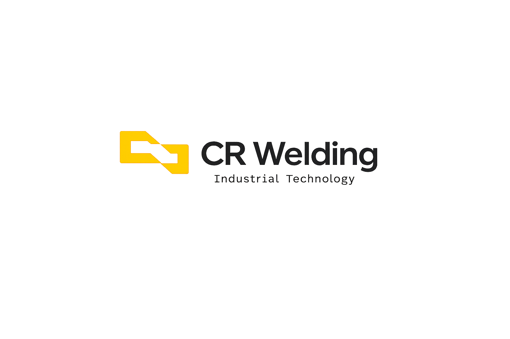

Padronização
Processos consistentes para reduzir variação e elevar a confiabilidade de cada entrega.

PRINCÍPIOS
Processos consistentes para reduzir variação e elevar a confiabilidade de cada entrega.
Acompanhamento técnico e leitura clara do escopo durante toda a execução.
Organização das etapas e decisões para facilitar comunicação e evolução operacional.
Aprendizado incorporado ao método para aumentar performance e previsibilidade.
MODELO
Na soldagem, qualidade significa controle rigoroso do processo, qualificação dos procedimentos de soldagem (WPS/PQR) e integridade comprovada das juntas em cada material — carbono, inoxidável, Duplex ou ligas especiais.
Na fabricação e montagem de tubulações industriais, qualidade significa precisão dimensional, rastreabilidade de materiais e conformidade com os requisitos técnicos de cada projeto.
No relacionamento comercial, qualidade também significa clareza, consistência de comunicação e compromisso com o que foi acordado.
Esse conjunto fortalece reputação, continuidade contratual e capacidade de atuar em operações mais exigentes.